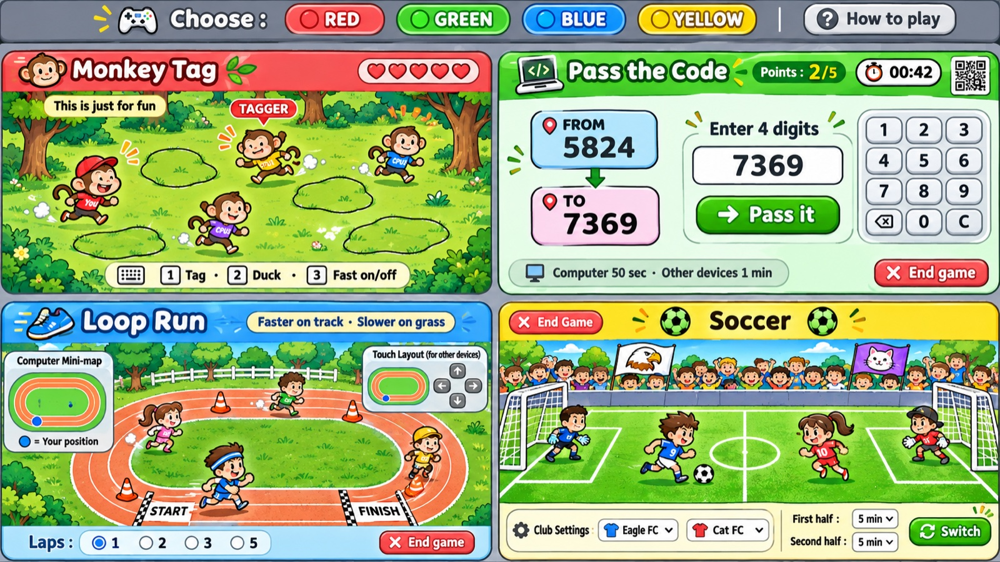
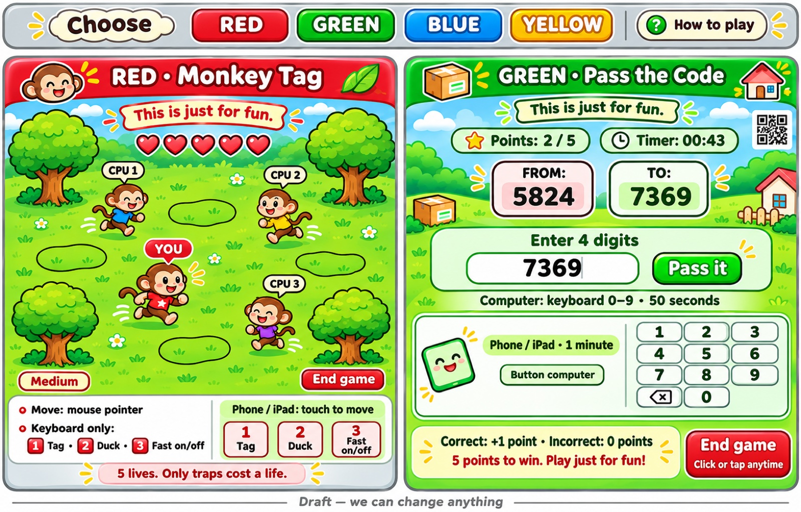
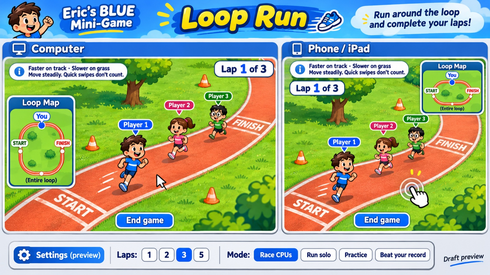
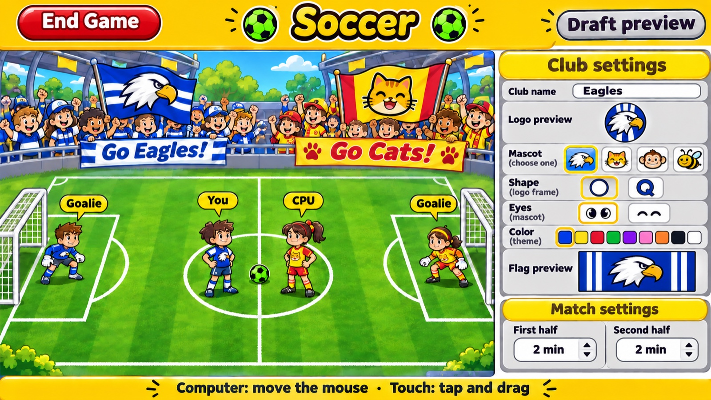

Plan and pictures
Version 1 includes all four playable games.
The pictures are drafts. The written rules include changes made after the pictures.
Choice screen

- Give each mini-game a vivid color palette and colorful scenery. Use the concept pictures as visual references.
- Gray background.
- A big box containing four choices: red, green, blue, and yellow.
- Each choice uses its matching color.
- Show “Choose” so players know what to do.
- Choosing a game opens it in its own view and fills the available game screen. Hide the choice menu and all other games during play. The four-game picture is an overview of the concepts.
- Include a “How to play” section. Eric has not finished supplying its words.
- The red choice is monkey tag. The green choice is a number-address code-sending game. The blue choice is a running game around a loop. The yellow choice is soccer with customizable clubs.
Red choice: monkey tag
Setting and players
- A forest with a few trees: three or four.
- Four monkey characters: one human-controlled player and three computer-controlled players (CPUs).
- Monkeys chase and try to tag one another, including the human player.
- Show a clear, readable “TAGGER” label above whichever monkey is currently tagging, alongside its player/CPU label, so players can identify the tagger without relying only on color. Who starts as tagger and how the role changes remain to be decided.
Controls
- Computer: move the monkey using the mouse pointer. The exact pointer-following behavior is still to be decided.
- Phones and iPads: touch to move the monkey. Whether this means tapping a destination or dragging is still to be decided.
- Button 1: tag someone.
- Button 2: duck.
- Button 3: toggle fast movement on or off. Press once to enable it; press again to disable it. Players do not need to hold it down.
- Computers require pressing the actual keyboard number keys: 1 to tag, 2 to duck, and 3 to toggle fast movement. Clicking or touching the on-screen action controls on a computer must not activate them. Show these keyboard instructions to computer players.
- Phones, iPads, and other non-computer devices show small square controls labeled with the button numbers or actions. Tapping these on-screen controls activates them.
Traps and lives
- Add a few traps that resemble normal ground but have a black outline so players can see them.
- Trap covers have smooth edges. Do not draw spikes or jagged, spike-like outlines.
- Tentative appearance idea — editable or removable at Eric’s request: traps should blend into the surrounding grass rather than resemble Battleship ships. Spotting traps should be a medium challenge: not too easy and not too hard. Proposed visual treatment: natural, gently irregular shapes with a subtle but visible black outline. Exact shape and outline strength are not final; review them with Eric in a future picture. Do not make traps invisible or frustrating to find.
- Keep the trap interior and sharks hidden while nobody is falling into that trap. Reveal them only when a monkey falls in; do not show an idle open trap or waiting/laughing sharks. The earlier concept image showing a shark in an unoccupied trap needs this correction in any future visual preview.
- Falling into a trap means sharks eat the monkey and the player loses one life.
- A player is out after losing five lives.
- Traps are the only way to be eliminated. Being tagged does not eliminate a player or take away a life.
- The effects of tagging and ducking, what happens after losing a life, and what happens after elimination remain to be decided.
Feel, difficulty, and session length
- Use the instruction: “This is just for fun.”
- Players do not have to win. Do not require a victory goal.
- Keep the experience relaxed and avoid making it frustrating.
- Use one medium difficulty. Do not add a hard mode.
- Players decide when to start and when to end their game. Do not impose a timed session or predetermined duration.
- How ending a session works alongside the five-life elimination rule is still to be decided.
Green choice: sending codes to number addresses

Status: main playable preview, with a colorful grassy delivery scene and a corner QR code.
- Show a start screen with How to play. Once the player starts, show four-digit “From” and “To” addresses, a blank answer box for the “To” digits, and the delivery timer. Keep the points and five-star progress visible on the start and play screens.
- Every code / number address must contain exactly four digits, using 0–9. Do not use shorter or longer codes. Choose the four-digit values during implementation; Eric’s earlier numbers were examples, not a fixed list.
- Allow 50 seconds per delivery. On computers, type using the keyboard number keys 0–9. On touch devices, tap “Number pad” to enter the digits.
- Use a “Pass it” button to submit and send to the entered address. Exact computer submission key, if any, remains undecided.
- A correct address earns one point. An incorrect address earns no point.
- Five points is a win, but winning is optional. This is just for fun, played alone without competing against anyone.
- Show “This is just for fun” at the top and a large white Pass the Code title with a package and house. Use blue sky, clouds, and grass. The small top-right QR graphic is decorative. Show points at the lower left and the scoring rules at the bottom.
- Include an “End game” button in a bottom corner. Players may choose to end at any time and do not have to use it. On computers, click it with the mouse pointer; on phones, iPads, and other touch devices, tap it. This is separate from the red game’s keyboard-only action controls.
- In the playable preview, each delivery gets its own timer. A timeout ends the delivery without a point. Players can choose another delivery, including after reaching five points. These are editable first-version choices.
Blue choice: running around a loop

Status: Eric is happy with this plan for now. The plan remains editable, and earlier blue-game decisions still apply unless Eric changes them.
Track and lap settings
- Run around a loop. In settings, players choose 1, 2, 3, or 5 laps.
- The assistant may choose the loop length later; no length has been selected yet.
- Once selected, use the same loop length for every session and every player in the published version. Do not randomly change it between games. Eric may choose to revise it in a future update; it is not an unchangeable design decision.
- Settings let players race against CPUs, run without CPU opponents, practice, or try to beat their own record. Use the same track for every option. Whether racing other people will also be available remains open.
- Show a clearly marked starting line and finish line on the track.
- A visible fence blocks the central infield so runners follow the full loop.
- Show player labels such as “Player 1”, “Player 2”, and “Player 3”. Exact player count and how multiplayer works remain to be decided; these labels do not settle those details.
Movement and screen
- Computers: move the runner using the mouse pointer.
- Phones and other touch devices: move the runner with touch controls. Exact gestures remain to be decided.
- The camera/screen follows the runner as they move around the loop, so play is not limited to a single screen. The runner can remain near the same screen position while the scenery scrolls.
- Show the loop on a mini-map with a moving dot marking the player's current position. On computers, place it on the left side. On every device other than a computer, place it in the top-right corner. Phones, tablets, and TVs are examples. Apply the rule to all non-computer devices regardless of touchscreen support.
Field, surfaces, and fair movement
- Give the field visible color and keep grass around the race track. The track and grass should be easy to tell apart. Exact track color remains open.
- Runners move slower on grass and faster on the actual track. Tell players this in the game instructions.
- Players must move their pointer or finger at a controlled pace. Movement that is too fast must not count toward race progress, even if the device detects it. Do not let rapid swipes, pointer jumps, or missed input grant an unfair shortcut or lap progress.
- Exact speed limits and handling of rejected movement remain to be decided. Keep this rule separate from the normal difference in speed between grass and track.
- Eric may consider an on/off setting for this rule in a later version. Do not add that setting to the first version.
Timing and ending
- No time limit.
- Place an “End game” button at the bottom so players can stop when they choose.
- What happens upon completing the chosen lap count remains to be decided.
Obstacles and safety
- Add obstacles such as cones and possibly trees.
- Nobody gets hurt or falls. No bleeding or injury imagery.
- How obstacles affect movement remains to be decided, within those rules.
Optional announcer
- An announcer may say things such as “Ready, get set, go!”, announce someone taking the lead, or mention someone dropping behind.
- The announcer is optional for the first version. It can be deferred; it is not required to complete the initial game.
Yellow choice: soccer

- A match has two halves. Players choose how long each half lasts in Match settings. The match ends when the second half finishes.
- Put an “End Game” button at the top left of the Soccer screen, where the old badge was. Players can use it to stop the match early.
- Two teams with two players each: one goalie and one striker per team. The human-controlled player and a CPU player start in the middle of the field. The human moves their own player, and the CPU moves independently. Who controls the other two players remains open.
- Play has no fouls, penalties, or cards, including red cards. Players cannot get injured.
- On computers, move your player with the mouse pointer. On phones, iPads, and other devices with touch input, press the field and move your finger to guide the player you control. Phones and iPads are examples.
- Put a “Switch” button at the bottom. It switches control between your team's goalie and striker. Controls for non-computer devices without touch input remain open.
- If a striker sends the ball into their own net, the other team gets one point. Confirm which positions can score in the opposing net.
- Put goals at the ends of the field and a cheering crowd in the background. The ball may be black or green and have a sticky quality. What “sticky” does during play remains open.
- In settings, players choose a club and customize its name, logo, and flag. Use the keyboard to type on a computer and an on-screen keyboard on other devices.
- Let players choose the club colors and flag layout. A large rectangle of color or a layout inspired by the Canadian flag are examples. Let players choose the logo's shape and size. A circle or a Q-shaped design are examples.
- A C in the Soccer club design is optional and appears only when the player chooses it.
- Logo options include monkeys, eagles, cats, dogs, humans, workers, pigs, birds, bees, flies, and dragonflies. Players can customize how the chosen character looks, such as with wide-open eyes, closed eyes, a starfish-like look, or a chilly expression.
- Display club logos on flags during play, with cheers such as “Go [club name]!”
Still to discuss
- Eric’s remaining ideas and final instruction wording.
- Yellow-game ball behavior, control of the other players, and match rules.
- What tagging and ducking do, including tag range and any cooldown.
- Exact mouse-pointer and touch movement behavior.
- Trap count and placement, returning to play after losing a life, and behavior after elimination.
- Whether to revise the green game’s timer and what happens after reaching five points after playtesting. Code length is exactly four digits.
- Blue-game loop length, track color, exact movement controls and speed limits, how personal records are measured and saved, whether to support races against other people, obstacle behavior, and what happens after the chosen laps are complete.
Do not turn open questions into assumed rules. Continue planning with Eric before implementation.